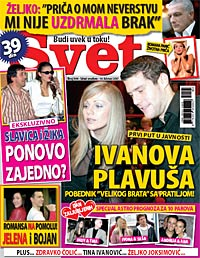

Žuta štampa, 2 deo
Naslovne strane Skandala i Sveta, bar kada je reč o primercima koje imam, vrlo su slične. Puno slika, likovi iz VB na svakoj naslovnici, zajedno sa folk pevačicama i ponekim sportistom, crvena slova. Jedino što je Svet 39 dinara, a Skandal više nego duplo - 80. Posle pažljivog čitanja, vreme je za uporednu analizu. Jedino što zaključci nikako ne naviru.
OK, vidim, i pitam se, da li je ovo Daliborka na dve žurke u istoj bluzi ili je sve to isti party? Vidim i da su leopard šare opet jako in. Da su u Skandalu vickasti, prave strip situacije, ima oblačića sa dijalozima, strelica koje skreću pažnju na detalje (obično sexz detalje). U Svetu slobodno koriste logiku, ne daju da ih sputava, nego činjenica da su određenom liku razbijena stakla na kolima postaje 'dokaz' da je to uradila obožavateljka, a podatak da je neko drugi viđen u hotelu sa devojkom postaje 'vest' da tri dana nisu izašli iz sobe i kako su tako slično jednom ni manje ni više nego Džon Lenon i Joko Ono.
U suštini, shvatam da se tekstovi prave na sledeći način:
1. napraviš sliku
2. potrudiš se da imaš bar jednu činjenicu, ma koliko bila mala i beznačajna, a u vezi te slike ili osobe na njoj
3. ako nemaš ni jednu činjenicu, osloni se na slobodno nagađanje i lupetanje šta bi ta slika mogla biti
4. ako ti se slika baš mnogo sviđa i bilo bi dobro da tekst. bude što duži, ubaci sve propratne podatke, ma koliko bili dobro poznati (tipa: kako smo imali prvu sezonu VB, koliko je trajao, kad je počeo i završio se, ko je pobedio, šta si o tome pisao prošli put i tako redom, rutinski odradiš dve stranice, minimum...).
Kao i People, i ova dva tabloida imaju rubrike gde se procenjuje oblačenje poznatih, a Skandali ima i neke dodatne rubrike tipa erotske fotografije, strane posvećene domaćim i stranim trashz serijama, neke recenzije - od filmova do javnih ličnosti (malo im opraštam ostalo zbog otrovnog tekstića na temu mega šminkerke Jelene Maćić).
Od nameravane uporedne analize ostadoše mi samo pitanja: Ko je ta Mina Kostić o kojoj uporno i u prvom planu pišu kao o poznatoj lezbejki? Čime se bavi i da li je to istina ili neka medijska strategija (njena ili medijska)?Da li je opravdan zaključak istraživačkog tima Skandala da je Goga Tržan preterano štedljiva, odnosno da se 'uvek nešto stiskala'? Jel Dragana stvarno ostavljena?
* * *
Da se ne bi završilo ovako uzaludno i isprazno, rešila sam da vidim šta kažu studije u svetu. Našla sam informativni akademski tekst: 'Magazines and the Celebrity Culture: Oprah and Rosie and Martha, Oh My!'
nastaviće se...
update:
Žuta štampa 1. deo je ovde
Žuta štampa 3. deo je ovde
Komentari
la lara | 19.02.07 22:15
etotako | 19.02.07 22:21
Sve sto je privatna medijska produkcija koja ne ugrozava drustvo, kao sto to cine tzv. dnevni politicki tabloidi koji za razne interesne grupe kreiraju politicke spletke najgore vrste, i dok to nije obavezno stivo u skolama, meni je ono, kako-god-ako-neko-voli-neka-uziva. Ono sto mene izludjuje jeste kad se radi sta se hoce sa onime sto oni nazivaju javni servis a u stvari je Tijanic-Kostunica produkcija. Sad sam pisala ovaj post: http://vijugi.com/la-lara/2007/02/heh.html i mnogo se nerviram
La Lara | 20.02.07 12:12
Više o medijima na Media Mix blogu
 RSS feed
RSS feed
 sadržaji se objavljuju pod
sadržaji se objavljuju pod
Vezano za taksativno navedene pretpostavke, potpuno si u pravu. Pošto se ovaj tržišni segment štampe zasniva na fotkama, najbitnije je doći do dobre fotke, a ostalo je već rutina. I, ovo nismo izmislili mi, već iskopirali smo taj vrli svet.
A sve je krenulo u drugoj polovini devedesetih kada je Robert Čoban otišao u SAD na jedno studijsko putovanje i uvideo da od političkog novinarstva nema mnogo vajde, a "Svet" je do tada bio opoziciono politički list. Okretanje celebrity-jima je čisto tržišno usmerena aktivnost, jer nijedan politički nedeljnik ili mesečnim u Srbiji ne može da dostigne tiraž (prodati) koji iznosi 104.000 koliko je imao poslednji "Svet".